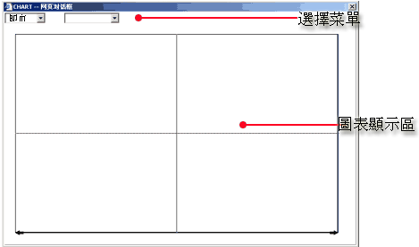
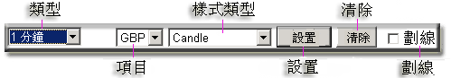
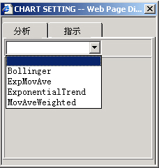
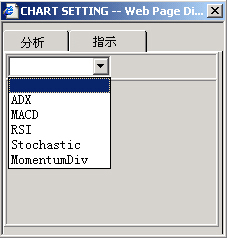

走勢圖
從
主菜單
中打開更改用戶密碼對話框。 該窗口由下面幾部分組成：
選擇菜單
圖表顯示區

視圖對話框
選擇欄
在視圖窗口頂部的按鈕欄提供用戶設置各種不同的視圖顯示方式。
按鈕欄：

類型
-
用戶可選擇以下類型:
即市
1 分鐘
5 分鐘
每日
每星期
每月
項目
- 下拉框可選擇交易項目視圖。
樣式類型
-
用戶可選擇以下樣式類型：
Candle
開市高低
收市高低
開
收市高低
設置
- 選擇分析/指示

分析

指示
清除
-
清除用戶畫線
劃線
- 允許用戶在圖中畫線